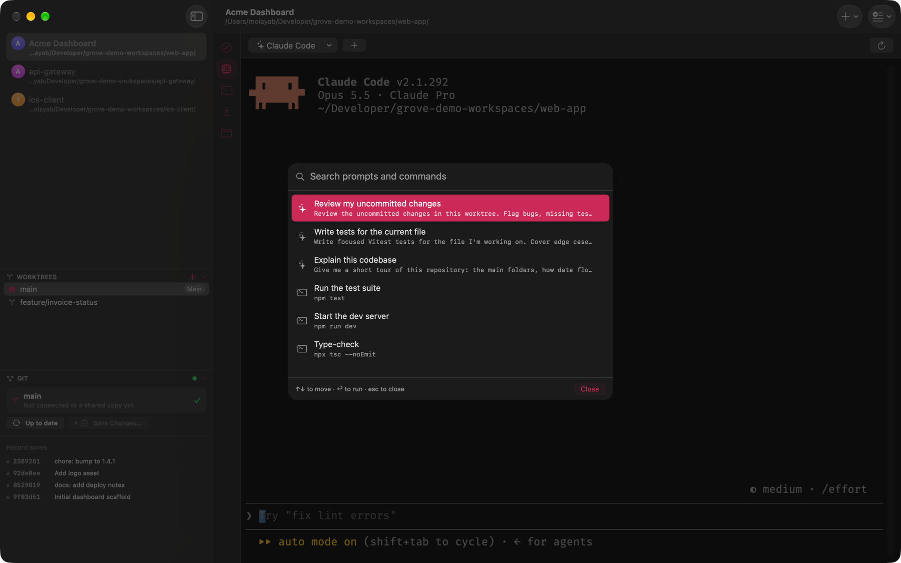
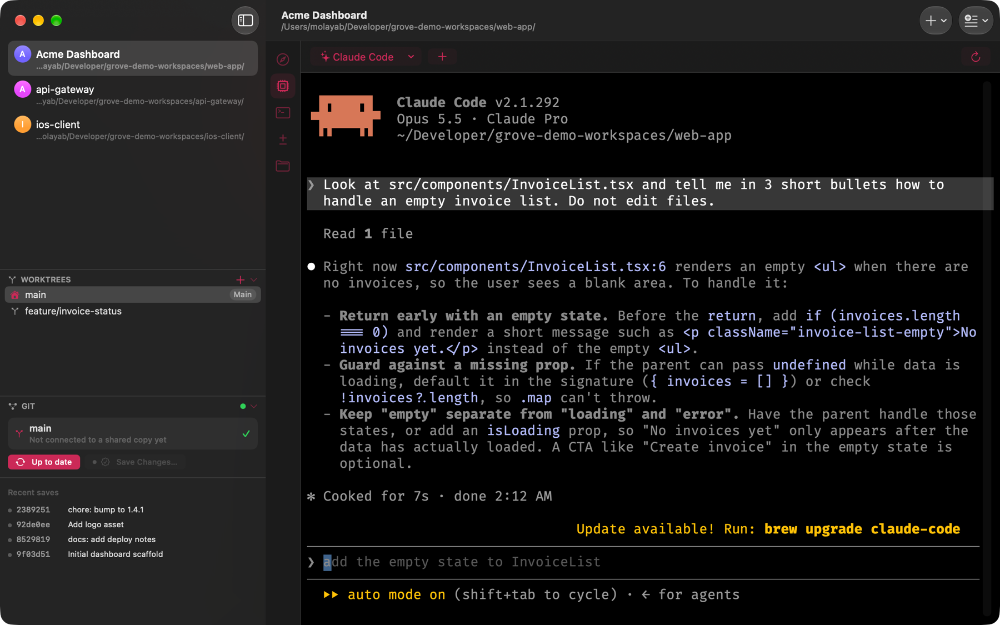
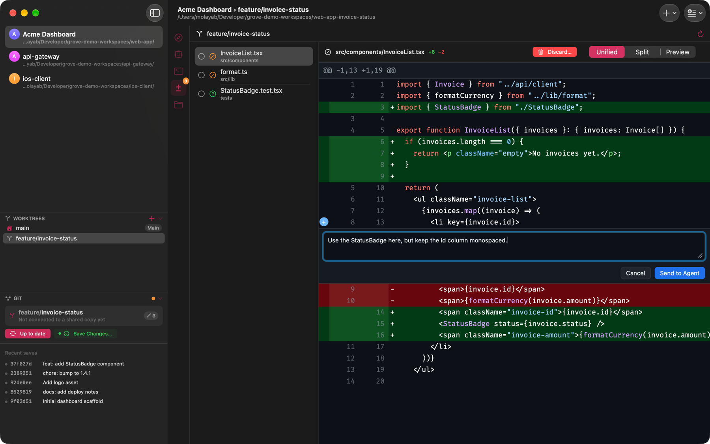
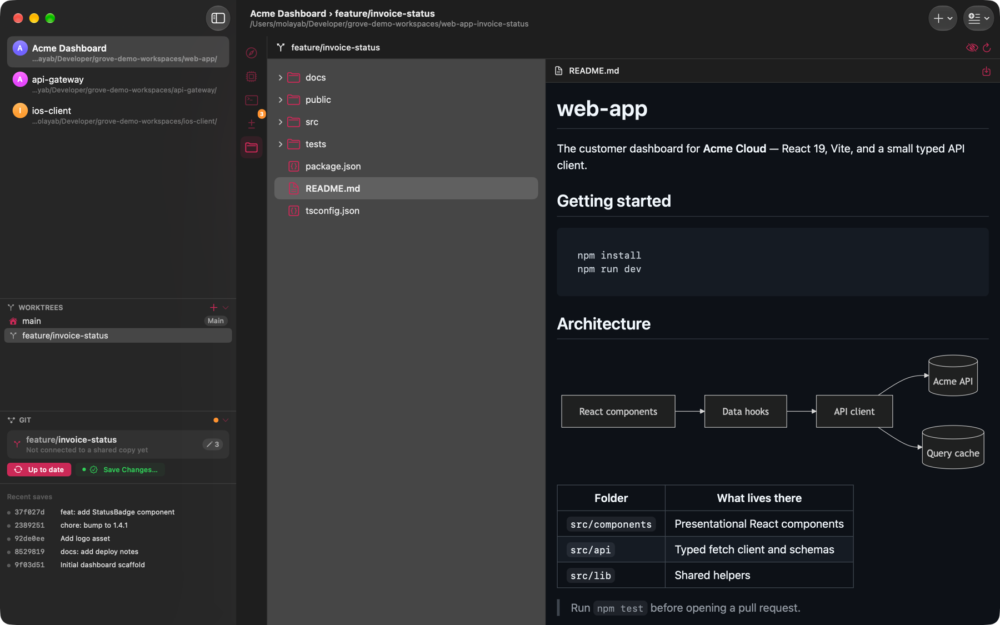
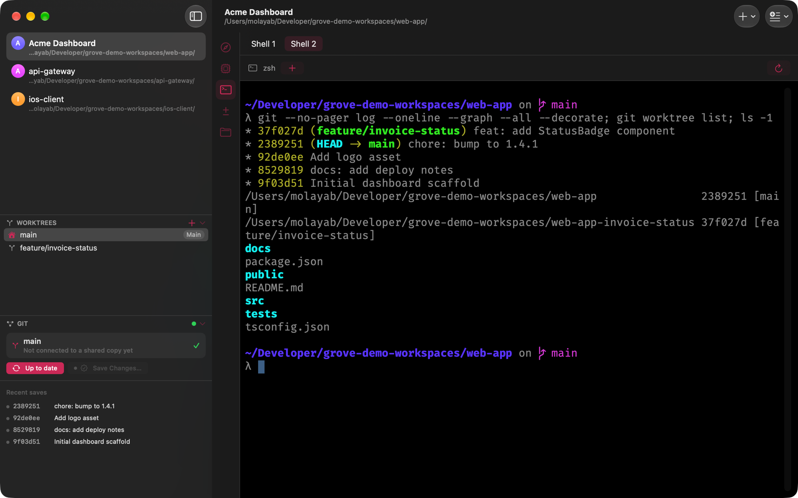
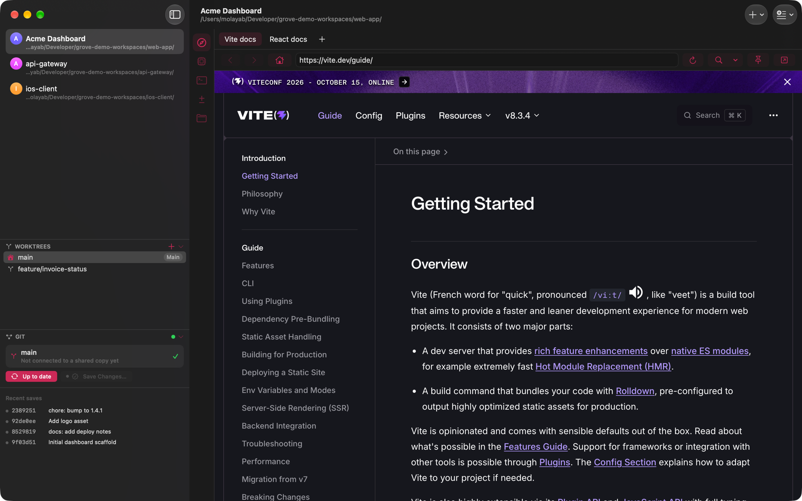
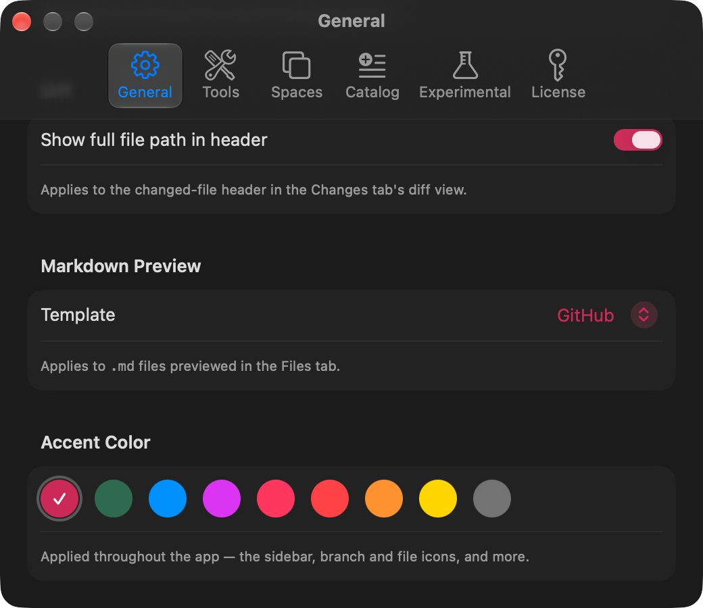

Firmado y notarizado por Apple — ábrelo directamente, sin avisos de seguridad.
Todos los releases en GitHub →Agentes de IA, git, una shell real y diffs — todo en el mismo checkout, sin cambiar de app.
Prueba gratis · Firmado con Developer ID y notarizado por Apple

Descarga
Una versión de prueba completa, servida directamente desde el último release de GitHub — sin cuenta, sin correo electrónico.
Firmado y notarizado por Apple — ábrelo directamente, sin avisos de seguridad.
Todos los releases en GitHub →Funciones
Nada de Electron. Nada de suscripciones. Solo una app nativa rápida y enfocada.
Trae tu propio agente de IA — Claude Code, opencode, Codex, Gemini CLI, Aider o cualquier otro CLI que agregues tú — y simplemente funciona, ya apuntando a la carpeta correcta. Ejecuta varias pestañas de agente lado a lado, sin configurar el PATH.
Trabaja en tres ramas a la vez, sin perder tu lugar. Crea un worktree nuevo desde cualquier rama con un clic — cada uno tiene su propio agente, shell, archivos y cambios, y todo te sigue cuando cambias.
La pestaña Changes se actualiza en vivo mientras tu agente edita archivos. Lee el diff, comenta cualquier línea y envía esa nota directamente al agente — sin copiar rutas ni números de línea.
Guarda los prompts y comandos que usas todos los días, por proyecto o en una biblioteca compartida. Presiona ⌘K, elige uno y aparece en tu agente o en una pestaña de shell — listo para ejecutar.
Un solo botón Sync en lugar de fetch, pull y push. Guarda tus cambios, mira tus guardados recientes y, si un pull está bloqueado por cambios locales, Grove te ofrece hacer stash y pull por ti.
Explora el checkout en un árbol de archivos y previsualiza lo que seleccionas. El Markdown se muestra al estilo GitHub — tablas, código e incluso diagramas Mermaid — y se exporta a PDF en un paso.
¿Necesitas una terminal de verdad? Abre todas las que quieras, todas ubicadas en la misma carpeta que tu agente — corre los tests en una, sigue un log en otra, sin cambiar de contexto.
Ancla el gestor de issues, la documentación o el dashboard de cada proyecto. Se abren en la pestaña Browser, justo al lado de tu código, y se quedan con ese espacio de trabajo.
Grove no deja que un clic accidental borre tu trabajo. No hay force push, descartar un archivo o eliminar un commit sin publicar siempre pide confirmación, y todo lo que sale de tu máquina también.
Cambia a otro proyecto y este sigue corriendo — su agente y su shell siguen en segundo plano aunque no lo estés mirando. Revisa uno sin pausar el otro, y vuelve exactamente a la pestaña donde lo dejaste.
Capturas
El mismo checkout, todas las formas en que trabajas en él.

Tu agente favorito, ya en la carpeta correcta — con cada proyecto y worktree a un clic.

Revisa el diff, comenta una línea y envíala directamente a tu agente.

Un árbol de archivos con vistas previas — el Markdown se muestra con tablas y diagramas Mermaid.

Todas las shells que necesites, ubicadas en el mismo checkout que tu agente.

Ancla la documentación, el gestor de issues o el dashboard de cada proyecto — junto a tu código.

Valores predeterminados sensatos desde el inicio — y un color de acento a tu gusto.
¿Por qué nativo?
~/.local/bin, ~/.bun/bin — incluso al abrir Grove desde el Dock, no solo desde la terminal.
Agentes compatibles
Grove encuentra el binario del agente automáticamente — no necesitas configurar el PATH. ¿Usas otro? Agrega cualquier agente CLI en Configuración.
Precios
Compra única. Todas las actualizaciones futuras incluidas. Elige el número de licencias según cuántos Macs uses.
Pago seguro a través de Gumroad · Gratis para descargar y probar — compra una licencia cuando termine tu prueba